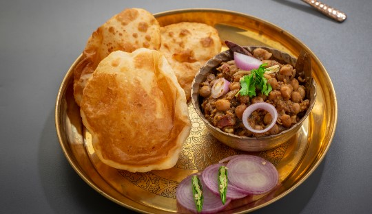
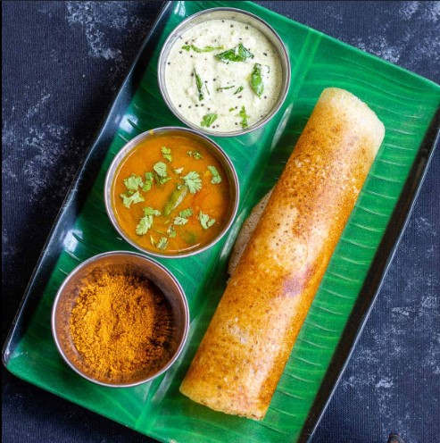
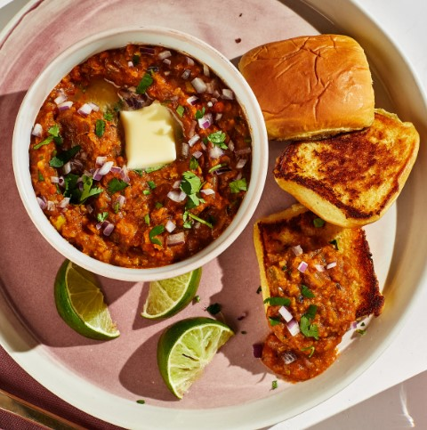
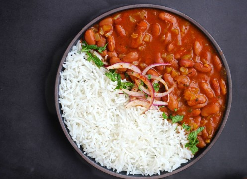
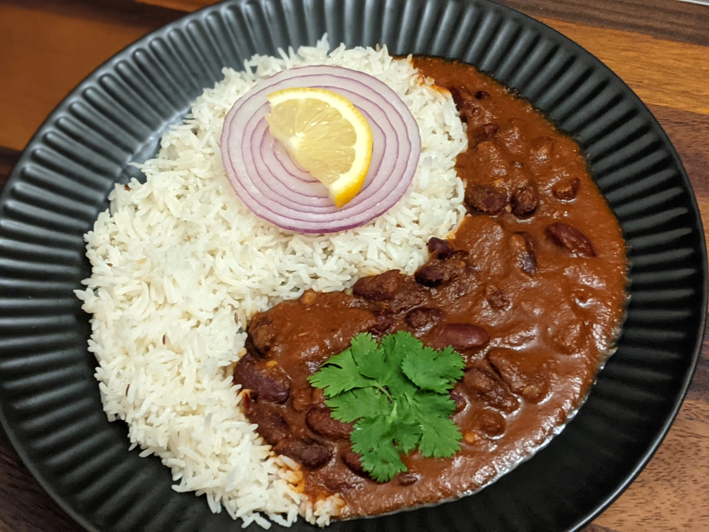

Food
Must try foods in India
Indian cuisine consists of a variety of regional and traditional cuisines native to the Indian subcontinent. Given the diversity in soil, climate, culture, ethnic groups, and occupations, these cuisines vary substantially and use locally available spices, herbs, vegetables, and fruits. Indian food is also heavily influenced by religion, in particular Hinduism and Islam, cultural choices and traditions.

Chole Bhature
Dosa
Pav Bhaji

